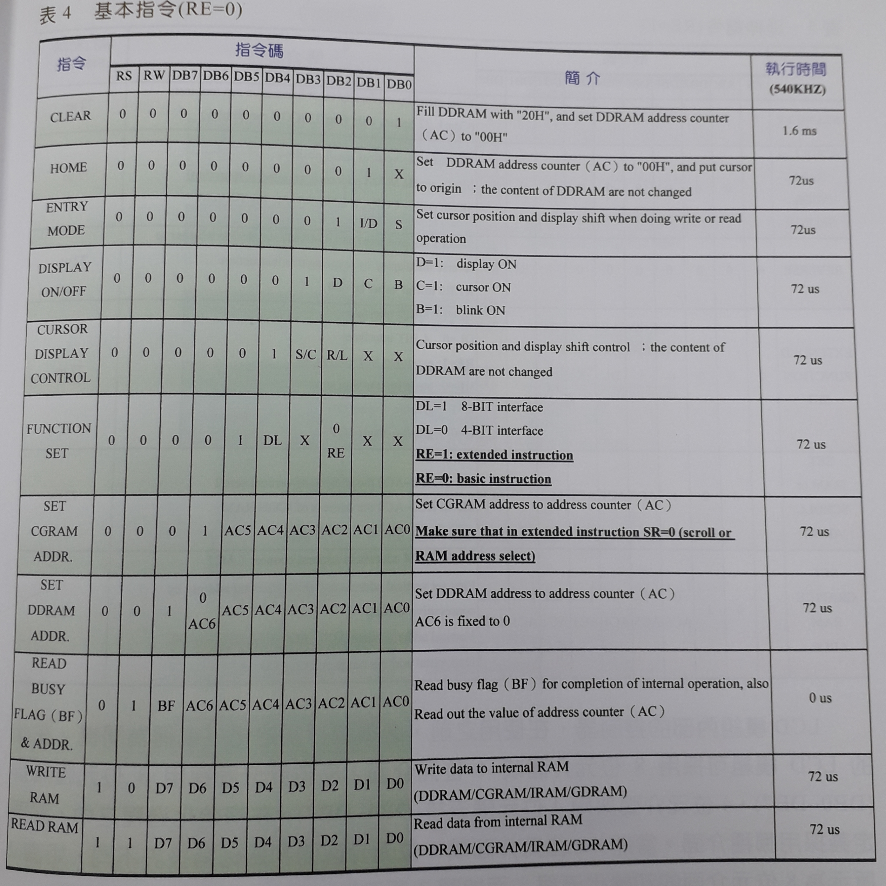
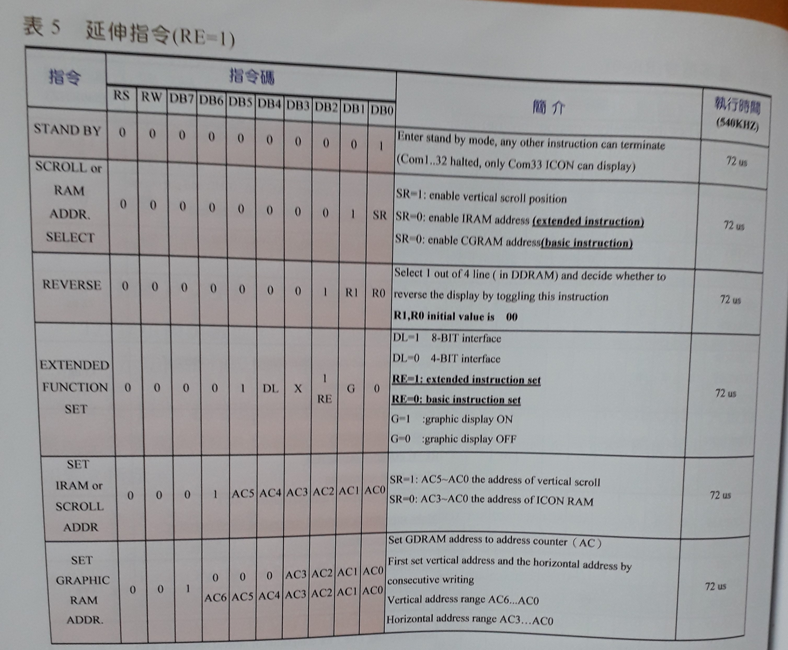

目標
使用FPGA，透過8bit傳輸介面來驅動LCD模組。
相關知識
LCD模組
KTM-626上安裝的LCD型號是WG14432B5，可以顯示中文字，為繪圖型LCD。
寬度144畫素、高度32畫素。
名詞說明
- AC 位址計數
- BF 忙碌旗標
- DDRAM 顯示資料暫存器
- CGRAM 自定義字型暫存器
- HCGROM 半寬字型記憶體(ASCII)
- CGROM 中文字型記憶體(BIG-5)
重要接腳說明

- RS 暫存器選擇 和 RW 讀/寫控制選擇
RS RW 簡介 0 0 寫入指令碼於指令暫存器。 0 1 讀取BF(忙碌旗標)和AC(位址計數器)的內容。 1 0 將資料寫入DDRAM(資料暫存器)。 1 1 從DDRAM讀取資料。 - EN LCD致能接腳
輸入一正脈波(0 -> 1 -> 0)即可完成寫入資料。 - D0 ~ D7 資料匯流排
輸入指令碼
控制指令表


初始化流程
stateDiagram-v2
[*] --> Still
Still --> [*]
Still --> Moving
Moving --> Still
Moving --> Crash
Crash --> [*]
設計架構
結果
心得
這是我第一次用LCD而不使用I2C的傳輸方式，而且還不是用寫程式的方式，最後快完成的時候還因為我時脈的腳位設錯，但幸好最後有發現。